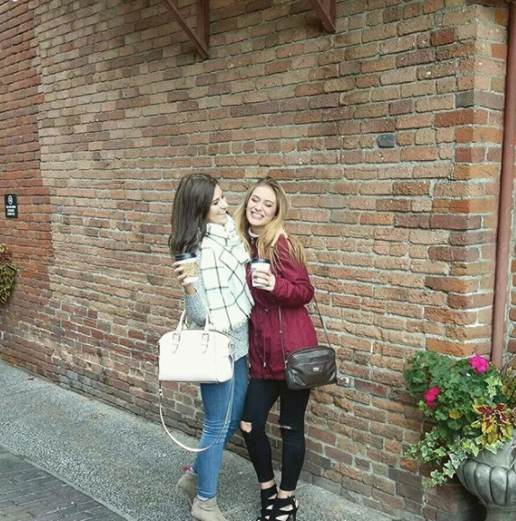
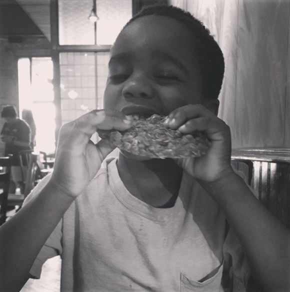
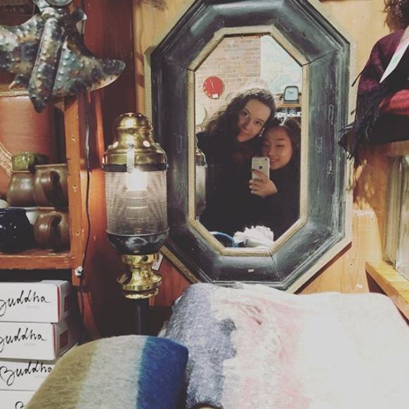
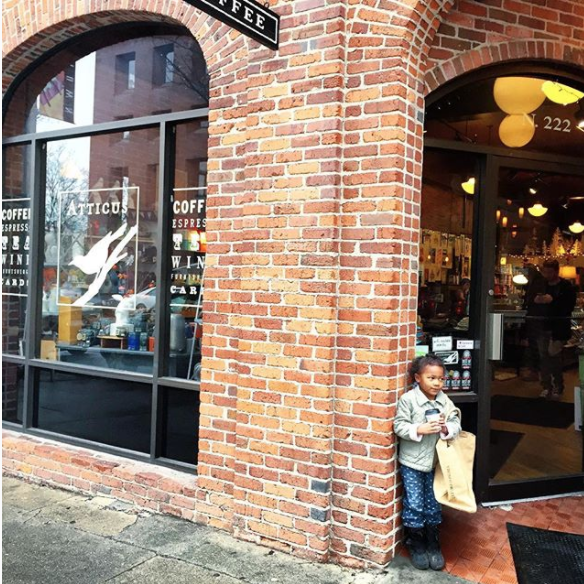

Local coffee and gift shop located in downtown Spokane! We provide coffee beans from local roasters, teas, gifts, books, and decor. Free Wifi for customers M-F.
222 N. Howard St, Spokane, WA 99201
Monday - Saturday 7:30am - 6pm
Sunday 9am - 5pm
"With the best coffee in Spokane and the best atmosphere of any Spokane coffee shop, Atticus is always my go-to when I'm downtown or when I need a little break." - S.F.
"We flew from PHX to Spokane and happened to find this gem of a coffee house on our way to Coeur d'Alene. We liked it so much that we stopped in a week later on our return to PHX. Great coffee, food & atmosphere!" - M.D.
"I've been meaning to come here for years. Finally stopped in today, they have the coolest shopping items and the lavender syrup in my white chocolate mocha was amazing!" - K.C.
TO SEE MORE CHECK OUT OUR FACEBOOK PAGE!
   